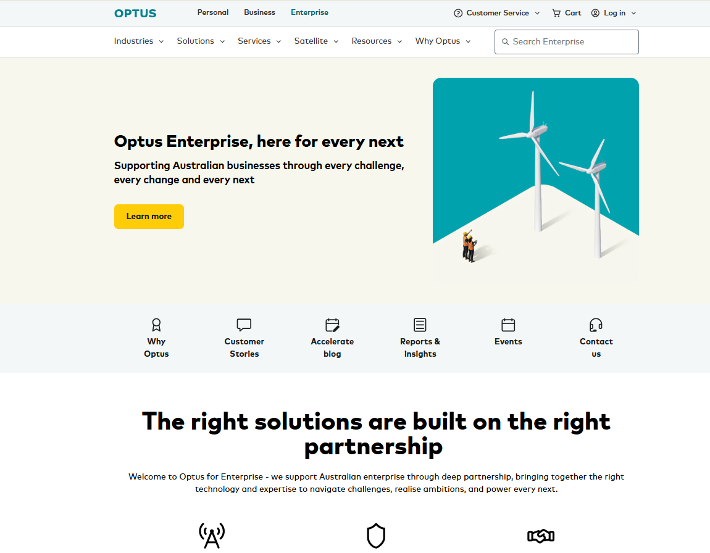

Data Analyst

Overview
At UniqueHire Consulting LLP, I worked remotely as a Data Analyst supporting client Optus's procurement process, maintaining cloud-based employee data.
What I did
- Supported client Optus's procurement process by maintaining cloud-based employee data, tracking who was on active projects and who was on the bench.
- Enabled faster resourcing by identifying available bench employees to assign when new projects came in.
- Automated manual Excel reports (cutting processing time by 40%) and built SQL-driven dashboards to visualize recruitment KPIs.